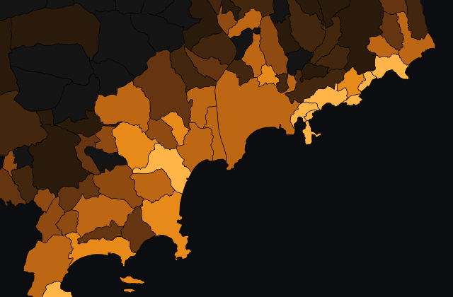
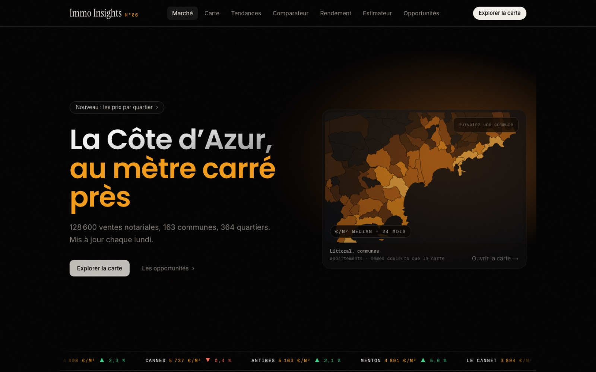
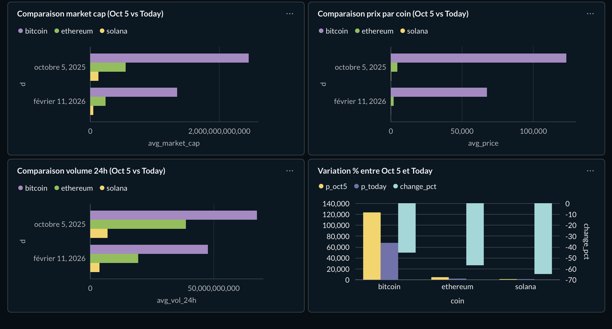

Transactions immobilières nettoyées, géocodées et agrégées.
Immo Insights N°06
En recherche d'alternance · data engineering
Des données brutes
Des données brutes
aux décisions.
Étudiant à Epitech Nice (RNCP 7, option IA & Big Data), je construis des pipelines de bout en bout : ingestion, qualité, modélisation SQL, orchestration et restitution. Basé à Cannes.

€/m² médian · 24 mois
Immo Insights N°06, littoral
appartements, 7 classes de moins de 3 039 à plus de 5 775 €/m²
Voir le site →
En chiffres
Des volumes réels, pas des maquettes
Quatre ordres de grandeur tirés de mes stages et de mes projets.
Recharges consolidées dans un datamart dbt + Airflow.
Ooredoo · 2025Trois traitements accélérés, soit 60 % de temps en moins.
Ooredoo · 2025Conseillers servis par le portail interne de suivi des demandes.
BIAT · 2024Projets
Ce que j'ai construit
Chaque projet est public sur GitHub, avec son code, ses tests et sa documentation.

immo-insights-06.vercel.appen ligne, mis à jour chaque lundi
2026 · Data engineering
Immo Insights N°06
Plateforme d'analyse du marché immobilier des Alpes-Maritimes : pipeline ELT médaillon sur six sources publiques, marts dbt/DuckDB testés, prix par commune et par quartier, carte interactive. Reconstruit de zéro et republié automatiquement chaque semaine.
- Python
- Airflow
- dbt
- DuckDB
- FastAPI
- Next.js
- GitHub Actions

Vue des écartsmétré R+4, indice A → B
2026 · Outil métier + IA
Écart BE
Comparateur de fichiers Excel pour bureaux d'études : écarts ligne à ligne, colonnes rapprochées malgré des intitulés différents, anomalies, synthèse IA (locale possible) et rapport Excel.
- FastAPI
- pandas
- openpyxl
- LLM
- Next.js

Tableau de bord Metabaseprix, volume, capitalisation
2025 · ETL temps réel
Suivi des prix crypto
Ingestion CoinGecko résistante aux erreurs d'API (reprises, erreur isolée par crypto), upsert PostgreSQL et vues agrégées par heure et par jour pour Metabase.
- Python
- Airflow
- Docker
- PostgreSQL
- Metabase
Projet plus ancien : IMMO ETL, pipeline Zillow ZHVI → PostgreSQL idempotent avec tableau de bord Metabase.
Expériences
Deux stages, des résultats mesurés
Ooredoo
Stagiaire data analyst / engineer
Tunis · mars → juin 2025
- Conception d'un datamart des recharges (dbt + Airflow, ~500 000 transactions par jour), devenu la source unique des rapports de revenus prépayés.
- Contrôles qualité avec Great Expectations : 2,7 % de doublons détectés, ARPU reporté corrigé de 11,2 à 10,9 TND.
- Optimisation de 3 jobs Spark (50 → 20 min) et tableau de bord Power BI ARPU / recharges par gouvernorat.
BIAT
Stagiaire développeur full-stack & data
Tunis · mars → juin 2024
- Développement d'un portail interne de suivi des demandes clients (Angular, Spring Boot), utilisé par les conseillers de ~150 agences.
- Mise en place de l'alimentation quotidienne des données du portail (~2 000 demandes par jour).
- Analyse des délais : 9 jours en moyenne pour un chéquier contre 3 annoncés, avec des tableaux de bord intégrés au portail.
Compétences
Ma boîte à outils
Ce que j'utilise réellement dans mes projets et en stage.
1// data & orchestration 2orchestration = "Airflow" // DAG quotidien + publication hebdo (GitHub Actions) 3transformation = "dbt" // marts testés, médaillon bronze → gold 4moteurs = ["DuckDB", "Spark"] // PySpark en stage chez Ooredoo 5qualité = "Great Expectations" // + tests dbt et pytest 6patrons = ["ETL", "ELT", "upsert idempotent"]
1// langages 2python = ["pandas", "NumPy", "Matplotlib"] 3sql = "avancé" // fenêtres, CTE, modélisation analytique 4javascript = "TypeScript, React" 5langues = ["français", "anglais C1", "arabe C1"]
1// back-end et front-end 2api = ["FastAPI", "API REST", "Spring Boot"] 3front = ["Next.js", "React Native", "Angular"] 4ia = "API LLM, modèles locaux" // synthèse d'Écart BE
1// bases de données, DevOps et BI 2bases = ["PostgreSQL", "MySQL", "DuckDB"] 3devops = ["Git", "Docker", "Bash", "Linux", "GitHub Actions"] 4bi = ["Power BI", "Metabase"] 5soft_skills = ["autonomie", "rigueur", "vulgarisation"]
Formation
Parcours
2026 → 2028
Bac +5
Epitech Nice · Architecte de systèmes d'information
RNCP 38114, niveau 7, option Intelligence Artificielle & Big Data. En recherche d'alternance.
2025
Bac +3
Université de Montpellier · Licence 3 informatique
Licence informatique, 3ᵉ année.
2022 → 2024
Bac +2
Université d'Avignon · Licence 1 et 2 informatique
Parcours informatique et bases du développement logiciel.
2022
Bac
Baccalauréat général · mention Bien
Spécialités mathématiques et NSI, lycée Gustave Flaubert.
Contact
Construisons quelque chose de solide.
Je recherche une alternance en data engineering ou en développement, dans le cadre de mon cursus Epitech (2026 → 2028). Basé à Cannes, permis B et véhiculé.